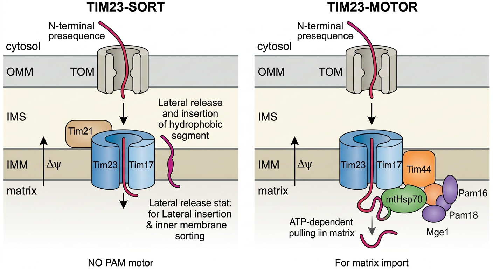

Deep Research
Falcon
(tin-44-deep-research-falcon.md)
Falcon
(tin-44-deep-research-falcon.md) Artifact IDs that may be injected in](tin-44-deep-research-falcon_artifacts/image-1.png){kind=link}
The research report should be a detailed narrative explaining the function, biological processes, and localization of the gene product. Citations should be given for all claims.
You should prioritize authoritative reviews and primary scientific literature when conducting research. You can supplement
this with annotations you find in gene/protein databases, but these can be outdated or inaccurate.
We are specifically interested in the primary function of the gene - for enzymes, what reaction is catalyzed, and what is the substrate specificity? For transporters, what is the substrate? For structural proteins or adapters, what is the broader structural role? For signaling molecules, what is the role in the pathway.
We are interested in where in or outside the cell the gene product carries out its function.
We are also interested in the signaling or biochemical pathways in which the gene functions. We are less interested in broad pleiotropic effects, except where these elucidate the precise role.
Include evidence where possible. We are interested in both experimental evidence as well as inference from structure, evolution, or bioinformatic analysis. Precise studies should be prioritized over high-throughput, where available.
Comprehensive Research Report: C. elegans TIN-44 (T09B4.9) — Probable Mitochondrial Import Inner Membrane Translocase Subunit Tim44
1. Gene Identity and Protein Overview
The C. elegans gene tin-44 (ORF name T09B4.9; UniProt accession O02161) encodes a probable mitochondrial import inner membrane translocase subunit of the Tim44 family. The protein is annotated as a precursor with a cleavable N-terminal presequence, consistent with mitochondrial matrix-targeted proteins. Key domains include the Tim44 domain (PF04280/IPR007379), Tim44-like domain (IPR039544), and an NTF2-like domain superfamily fold (IPR032710). No dedicated primary study has been published on the C. elegans TIN-44 protein; however, considerable functional information can be derived from genome-wide screens in C. elegans and from extensive mechanistic studies on its yeast and mammalian orthologs, which are highly conserved.
2. Primary Function: Scaffold Protein in the TIM23-Associated Import Motor (PAM Complex)
2.1 Molecular Function of Tim44-Family Proteins
Tim44 is not an enzyme or transporter in the classical sense; rather, it is a peripheral membrane scaffold protein that resides on the matrix face of the inner mitochondrial membrane (IMM). Its primary function is to tether the presequence translocase-associated motor (PAM) complex to the TIM23 protein-conducting channel, thereby enabling ATP-dependent translocation of presequence-containing precursor proteins into the mitochondrial matrix (chaudhuri2020tim17updatesa pages 2-5, paschen2001proteinimportinto pages 5-7, fox2012mitochondrialproteinsynthesis pages 14-15).
Tim44 performs several critical molecular functions:
-
Recruitment of mtHsp70: Tim44 serves as the docking site for mitochondrial Hsp70 (mtHsp70/Ssc1 in yeast, mortalin/HSPA9 in humans), the ATP-driven motor chaperone that binds incoming polypeptide segments emerging from the TIM23 channel and prevents their retrograde movement (paschen2001proteinimportinto pages 5-7, bauer2000proteintranslocationinto pages 1-2).
-
Bridging TIM23 channel and PAM motor: Tim44 makes direct contacts with the integral membrane channel subunits Tim17 and Tim23 while simultaneously recruiting soluble motor components (mtHsp70 and nucleotide exchange factor Mge1), thereby physically linking the translocation channel to the import driving force (chaudhuri2020tim17updatesa pages 2-5, jain2025investigatingmitochondrialpresequence pages 15-17).
-
Differential regulation of motor subunits: Studies using the yeast temperature-sensitive mutant tim44-804 have revealed that Tim44 is not merely a passive scaffold but actively regulates recruitment of distinct PAM modules. Tim44 promotes association of the J-complex (Pam18/Pam16) with the TIM23 complex while simultaneously keeping Pam17 binding at low levels. Inactivation of Tim44 leads to increased Pam17 binding, indicating both stimulatory and inhibitory regulatory functions (hutu2008mitochondrialproteinimport pages 7-7, hutu2008mitochondrialproteinimport pages 1-2).
-
Presequence interaction: The C-terminal domain of Tim44 can directly interact with incoming presequences, helping to guide precursor proteins toward the motor machinery (jain2025investigatingmitochondrialpresequence pages 15-17).
2.2 Two Functional Forms of the TIM23 Complex
The TIM23 complex exists in two functionally distinct configurations, and Tim44 is specifically associated with the motor form:
- TIM23-SORT: Contains Tim21 but lacks the PAM complex. This form mediates lateral insertion of proteins with hydrophobic sorting signals into the inner membrane in a PAM-independent manner (laan2006mitochondrialpreproteintranslocases pages 7-8, hutu2008mitochondrialproteinimport pages 3-4).
- TIM23-MOTOR: Lacks Tim21 but contains the full PAM complex including Tim44. This form is required for ATP-dependent translocation of soluble proteins into the matrix (jain2025investigatingmitochondrialpresequence pages 20-23, laan2006mitochondrialpreproteintranslocases pages 5-7, laan2006mitochondrialpreproteintranslocases pages 7-8).
Consistent with this model, the yeast tim44-804 mutant strongly inhibits import of matrix-targeted precursor proteins (such as the F1Fo-ATPase β-subunit) while import of inner membrane-sorted proteins remains unaffected (hutu2008mitochondrialproteinimport pages 3-4).
The following schematic illustrates the two TIM23 configurations and the central role of Tim44 in the motor form:
Image: Schematic of mitochondrial presequence import showing the TIM23 complex in its sorting and motor forms. The diagram highlights Tim44 as the matrix-side scaffold that recruits the PAM motor, including mtHsp70, for ATP-dependent matrix import.
3. Subcellular Localization
Tim44 is a hydrophilic, peripheral membrane protein associated with the inner face (matrix side) of the inner mitochondrial membrane (bauer2000proteintranslocationinto pages 1-2, paschen2001proteinimportinto pages 3-5). It lacks a classical hydrophobic transmembrane segment but contains a cleavable N-terminal mitochondrial targeting presequence. Tim44 associates with the membrane through interactions with the phospholipid cardiolipin and with integral membrane subunits Tim17 and Tim23 (bauer2000proteintranslocationinto pages 1-2, jain2025investigatingmitochondrialpresequence pages 15-17). In yeast, Tim44 exists as a dimer at the matrix side of the TIM23 complex, mediated by coiled-coil domains in its N-terminal region (bauer2000proteintranslocationinto pages 1-2, paschen2001proteinimportinto pages 5-7).
4. Protein Structure and Domain Architecture
Tim44 has a modular architecture:
- N-terminal mitochondrial targeting presequence: Cleaved upon import into the matrix.
- N-terminal segment with intrinsically disordered region: Interacts with incoming presequences, Hsp70, Pam16, and Tim23 to guide precursor proteins (jain2025investigatingmitochondrialpresequence pages 15-17).
- Coiled-coil domains in the N-terminal half: Mediate dimerization (bauer2000proteintranslocationinto pages 1-2).
- C-terminal domain (containing the Tim44/NTF2-like fold): Interacts with presequences, mtHsp70, other PAM subunits, and the membrane itself. This is also the domain targeted by the pharmacological inhibitor MB-10 (jain2025investigatingmitochondrialpresequence pages 15-17, zhang2024afirstinclasstimm44 pages 1-2).
Recent cryo-EM studies of the TIM23 complex core (Tim17-Tim23 heterodimer) noted that Tim44 tends to dissociate during purification, underscoring its peripheral/dynamic association with the translocase rather than forming a stably integrated structural component (sim2023structuralbasisof pages 1-4).
5. Functional Evidence in C. elegans
5.1 RNAi Phenotype and UPRmt Activation
Although no dedicated loss-of-function mutant study exists for C. elegans tin-44, the gene has been identified in multiple genome-wide RNAi screens:
-
In a genome-wide RNAi screen for negative regulators of the mitochondrial unfolded protein response (UPRmt), Bennett et al. (2014) found that RNAi knockdown of T09B4.9 (tin-44) significantly induced expression of the hsp-6p::gfp UPRmt reporter and extended mean lifespan by 11.1% (P = 2.4 × 10⁻¹⁴) (bennett2014activationofthe pages 2-3). However, the same study demonstrated that UPRmt activation is neither necessary nor sufficient for lifespan extension, and that some mitochondrial import gene knockdowns (including tin-44) that induce UPRmt actually reduced longevity in certain experimental contexts (bennett2014activationofthe pages 6-6).
-
Hernando-Rodríguez and Artal-Sanz (2018) identified TIN-44 among mitochondrial import factors (alongside TOMM-22, DNJ-21, TIMM-17B.1, and TIMM-23) whose RNAi depletion induces mitochondrial stress responses in C. elegans (hernandorodriguez2018mitochondrialqualitycontrol pages 6-8).
5.2 Transcriptional Regulation Under Mitochondrial Stress
Xin et al. (2022) demonstrated that upon UPRmt activation, the C. elegans mitochondrial import machinery is transcriptionally upregulated in an ATFS-1-dependent manner. Specifically, tin-44 was among the import genes (alongside hsp-6, mppa-1, mppb-1, and timm-23) that are induced during mitochondrial stress, indicating a compensatory feedback mechanism to maintain import capacity under proteotoxic conditions (xin2022theuprmtpreserves pages 6-9).
5.3 Role in the UPRmt Signaling Pathway
The connection between tin-44 and UPRmt is mechanistically coherent: the transcription factor ATFS-1 contains both a mitochondrial targeting sequence (MTS) and a nuclear localization signal. Under normal conditions, ATFS-1 is imported into mitochondria and degraded by the Lon protease. When mitochondrial import is compromised—including by depletion of import machinery components like TIN-44—ATFS-1 fails to be imported, accumulates in the cytosol, and translocates to the nucleus where it activates UPRmt gene expression (rolland2019compromisedmitochondrialprotein pages 1-2, hernandorodriguez2018mitochondrialqualitycontrol pages 3-5, xin2022theuprmtpreserves pages 1-2). Rolland et al. (2019) established that compromised mitochondrial protein import acts as a direct signal for UPRmt activation through this ATFS-1-dependent mechanism (rolland2019compromisedmitochondrialprotein pages 5-7, rolland2019compromisedmitochondrialprotein pages 1-2).
6. Comparative Functional Summary
The following table summarizes the key functional properties of TIN-44 and its orthologs:
| Property | C. elegans TIN-44 | Yeast Tim44 | Human TIMM44 |
|---|---|---|---|
| Gene name / synonym | tin-44; ORF T09B4.9; annotated as probable mitochondrial import inner membrane translocase subunit tin-44 (UniProt O02161) (bennett2014activationofthe pages 2-3) | Tim44; classic fungal TIM23/PAM motor subunit (bauer2000proteintranslocationinto pages 1-2, hutu2008mitochondrialproteinimport pages 3-4) | TIMM44; translocase of inner mitochondrial membrane 44 (OpenTargets Search: -TIMM44, zhang2024afirstinclasstimm44 pages 1-2) |
| UniProt ID | O02161 (user-provided target identity; consistent with T09B4.9/tin-44 annotation) | Not directly established in gathered evidence | Not directly established in gathered evidence |
| Protein family | Tim44 family; inferred metazoan ortholog of mitochondrial import motor scaffold protein (bennett2014activationofthe pages 2-3, xin2022theuprmtpreserves pages 6-9) | Tim44 family; docking/scaffold component of the PAM import motor associated with TIM23 (paschen2001proteinimportinto pages 5-7, laan2006mitochondrialpreproteintranslocases pages 5-7) | TIMM44/Tim44 family; PAM-associated mitochondrial protein import factor (zhang2024afirstinclasstimm44 pages 1-2, michaelis2022proteinimportmotor pages 5-6) |
| Subcellular localization | Mitochondrial inner membrane import machinery; function inferred on the matrix side of the inner membrane from orthology and import-related phenotypes (bennett2014activationofthe pages 2-3, xin2022theuprmtpreserves pages 6-9) | Peripheral inner mitochondrial membrane protein on the matrix face; hydrophilic, membrane-associated, can interact with cardiolipin (bauer2000proteintranslocationinto pages 1-2, paschen2001proteinimportinto pages 3-5) | Mitochondrial inner membrane import machinery / mitochondrial fraction; part of PAM/TIM23-associated import system (zhang2024afirstinclasstimm44 pages 1-2, zhang2024afirstinclasstimm44 pages 4-6) |
| Primary function | Likely scaffold/adaptor for matrix protein import through TIM23-PAM; required for efficient mitochondrial protein import, and its knockdown activates UPRmt (bennett2014activationofthe pages 2-3, xin2022theuprmtpreserves pages 6-9, rolland2019compromisedmitochondrialprotein pages 1-2) | Scaffold/docking protein that recruits mtHsp70 and links the TIM23 channel to the PAM motor to drive ATP-dependent import of presequence-containing proteins into the matrix (chaudhuri2020tim17updatesa pages 2-5, paschen2001proteinimportinto pages 5-7) | Essential mitochondrial import factor; supports pre-protein import, mitochondrial integrity, respiration/ATP production, and in cancer cells supports Akt-mTOR-linked growth programs (zhang2024afirstinclasstimm44 pages 1-2, zhang2024afirstinclasstimm44 pages 12-13, zhang2024afirstinclasstimm44 pages 10-12) |
| Complex membership | Inferred member of the TIM23/PAM mitochondrial import machinery in worms (bennett2014activationofthe pages 2-3, xin2022theuprmtpreserves pages 6-9) | Part of TIM23MOTOR/PAM; distinguishes matrix-import motor form from TIM23SORT form (jain2025investigatingmitochondrialpresequence pages 20-23, laan2006mitochondrialpreproteintranslocases pages 5-7, laan2006mitochondrialpreproteintranslocases pages 7-8) | Component of the PAM complex associated with TIM23 (zhang2024afirstinclasstimm44 pages 1-2, michaelis2022proteinimportmotor pages 5-6) |
| Key interactions | Functional association with mitochondrial import machinery and UPRmt signaling; transcriptionally co-upregulated with import genes such as timm-23, mppa-1, mppb-1 during UPRmt (xin2022theuprmtpreserves pages 6-9) | Interacts with mtHsp70, Mge1, Tim17, Tim23, Pam16/Pam18/Pam17, incoming presequences, and cardiolipin; recruits motor modules to the translocase (hutu2008mitochondrialproteinimport pages 7-7, hutu2008mitochondrialproteinimport pages 1-2, jain2025investigatingmitochondrialpresequence pages 15-17) | Associated with TIMM23/TIM23, PAM components, and functionally linked to mitochondrial import and mitophagy signaling; MB-10 binds the C-terminal domain of TIMM44 (zhang2024afirstinclasstimm44 pages 1-2, zhang2024afirstinclasstimm44 pages 4-6, michaelis2022proteinimportmotor pages 5-6) |
| Loss-of-function phenotype (RNAi / mutant) | RNAi induces hsp-6p::gfp UPRmt reporter and in one genome-wide screen increased mean lifespan by 11.1%; import impairment is consistent with mitochondrial stress signaling (bennett2014activationofthe pages 2-3, bennett2014activationofthe pages 6-6). Reviews also place TIN-44 among import factors whose depletion induces mitochondrial stress and can reduce lifespan in some contexts (hernandorodriguez2018mitochondrialqualitycontrol pages 6-8) | Essential for matrix-targeted protein import; temperature-sensitive tim44-804 strongly inhibits import of matrix-destined precursors while sparing inner-membrane sorting, showing a selective motor defect rather than gross TIM23 destruction (hutu2008mitochondrialproteinimport pages 3-4) | Genetic depletion or pharmacologic blockade (MB-10/MitoBloCK-10) causes mitochondrial depolarization, ROS increase, ATP reduction, apoptosis, and strong inhibition of bladder cancer cell growth; PAM sequestration involving TIMM44 can also reduce import and trigger mitophagy (zhang2024afirstinclasstimm44 pages 1-2, zhang2024afirstinclasstimm44 pages 6-8, michaelis2022proteinimportmotor pages 5-6) |
| Disease associations | No direct worm disease annotation; chiefly used as a model for mitochondrial import stress and UPRmt biology (bennett2014activationofthe pages 2-3, rolland2019compromisedmitochondrialprotein pages 1-2) | Not applicable as a human disease gene; chiefly a mechanistic model for mitochondrial import (paschen2001proteinimportinto pages 5-7, hutu2008mitochondrialproteinimport pages 3-4) | Open Targets reports associations with neurodegenerative disease, Parkinson disease, Alzheimer disease, multiple sclerosis, and lysosomal storage disease; recent work also implicates TIMM44 as a potential bladder cancer therapeutic target (OpenTargets Search: -TIMM44, zhang2024afirstinclasstimm44 pages 1-2) |
Table: This table compares key functional properties of C. elegans TIN-44 with its yeast and human orthologs. It highlights the conserved role of Tim44-family proteins in TIM23/PAM-mediated mitochondrial protein import and summarizes organism-specific phenotypes and disease relevance.
7. Broader Biological Context and Pathways
7.1 Mitochondrial Protein Import Pathway
TIN-44 functions within the presequence import pathway (TIM23 pathway), the major route by which nuclear-encoded mitochondrial matrix proteins are imported. The pathway involves: (1) cytosolic recognition by chaperones; (2) passage through the TOM complex in the outer membrane; (3) transfer to the TIM23 complex in the inner membrane, driven by the membrane potential (Δψ); and (4) ATP-dependent pulling into the matrix by the PAM motor, in which Tim44 serves as the essential scaffold tethering mtHsp70 to the channel exit (paschen2001proteinimportinto pages 5-7, laan2006mitochondrialpreproteintranslocases pages 5-7, fox2012mitochondrialproteinsynthesis pages 11-13).
7.2 Mitophagy Signaling
In mammalian cells, the PAM complex containing TIMM44 has been implicated in mitophagy regulation. Michaelis et al. (2022) demonstrated that during mitochondrial protein misfolding, PAM components including TIMM44 dissociate from the TIM complex, reducing protein import and triggering mitophagy even in the absence of membrane depolarization. This establishes a novel mitophagy induction mechanism that is independent of the canonical PINK1 stabilization pathway (michaelis2022proteinimportmotor pages 5-6).
7.3 Disease Relevance of the Tim44 Family
Human TIMM44 has been associated with several disease contexts:
-
Cancer: TIMM44 is significantly overexpressed in bladder cancer tissues and cells. The first-in-class TIMM44 blocker MB-10 (MitoBloCK-10) binds the C-terminal domain of TIMM44, disrupts mitochondrial function (causing depolarization, oxidative stress, and ATP reduction), inhibits the Akt-mTOR pathway, and potently suppresses bladder cancer cell growth both in vitro and in vivo (zhang2024afirstinclasstimm44 pages 1-2, zhang2024afirstinclasstimm44 pages 12-13, zhang2024afirstinclasstimm44 pages 6-8).
-
Neurodegenerative diseases: OpenTargets database reports associations between TIMM44 and neurodegenerative diseases including Alzheimer's disease, Parkinson's disease, and multiple sclerosis, primarily through CRISPRi screening evidence in astrocyte models (OpenTargets Search: -TIMM44).
-
Diabetes: TIMM44 has been studied in the context of diabetic kidney disease and mitochondrial dysfunction in diabetes. Timm44 transgenic mice were used to study the effects of enhanced mitochondrial import on diabetic nephropathy (OpenTargets Search: -TIMM44).
8. Summary
C. elegans tin-44 (T09B4.9, UniProt O02161) encodes the nematode ortholog of the Tim44 family of mitochondrial protein import scaffold proteins. Based on extensive conservation within the Tim44 family and direct experimental evidence from C. elegans RNAi studies, TIN-44 functions as a peripheral inner mitochondrial membrane scaffold protein that tethers the PAM import motor to the TIM23 presequence translocase channel on the matrix side. Its primary role is to recruit mtHsp70 to the channel exit, enabling ATP-dependent vectorial translocation of presequence-containing precursor proteins into the mitochondrial matrix. TIN-44 is specifically required for the TIM23-MOTOR form of the translocase that drives matrix import, but not for the TIM23-SORT pathway that mediates lateral insertion into the inner membrane.
In C. elegans, depletion of tin-44 by RNAi compromises mitochondrial protein import, which activates the mitochondrial unfolded protein response (UPRmt) through the ATFS-1 transcription factor pathway and can modulate lifespan. Conversely, UPRmt activation transcriptionally upregulates tin-44 expression as part of a compensatory response to maintain import capacity. The human ortholog TIMM44 has emerged as a potential therapeutic target in cancer, with the first-in-class blocker MB-10 demonstrating preclinical efficacy against bladder cancer. The Tim44 protein family thus represents a conserved, essential component of mitochondrial biogenesis whose dysfunction intersects with aging, stress signaling, and disease.
References
-
(chaudhuri2020tim17updatesa pages 2-5): Minu Chaudhuri, Chauncey Darden, Fidel Soto Gonzalez, Ujjal K. Singha, Linda Quinones, and Anuj Tripathi. Tim17 updates: a comprehensive review of an ancient mitochondrial protein translocator. Biomolecules, 10:1643, Dec 2020. URL: https://doi.org/10.3390/biom10121643, doi:10.3390/biom10121643. This article has 26 citations.
-
(paschen2001proteinimportinto pages 5-7): Stefan A. Paschen and Walter Neupert. Protein import into mitochondria. IUBMB Life, 52:101-112, Sep 2001. URL: https://doi.org/10.1080/15216540152845894, doi:10.1080/15216540152845894. This article has 150 citations and is from a peer-reviewed journal.
-
(fox2012mitochondrialproteinsynthesis pages 14-15): Thomas D Fox. Mitochondrial protein synthesis, import, and assembly. Genetics, 192:1203-1234, Dec 2012. URL: https://doi.org/10.1534/genetics.112.141267, doi:10.1534/genetics.112.141267. This article has 283 citations and is from a domain leading peer-reviewed journal.
-
(bauer2000proteintranslocationinto pages 1-2): Matthias F Bauer, Sabine Hofmann, Walter Neupert, and Michael Brunner. Protein translocation into mitochondria: the role of tim complexes. Trends in cell biology, 10 1:25-31, Jan 2000. URL: https://doi.org/10.1016/s0962-8924(99)01684-0, doi:10.1016/s0962-8924(99)01684-0. This article has 334 citations and is from a domain leading peer-reviewed journal.
-
(jain2025investigatingmitochondrialpresequence pages 15-17): Naintara Jain. Investigating Mitochondrial Presequence Import. PhD thesis, University Goettingen, 2025. URL: https://doi.org/10.53846/goediss-11596, doi:10.53846/goediss-11596.
-
(hutu2008mitochondrialproteinimport pages 7-7): Dana P. Hutu, Bernard Guiard, Agnieszka Chacinska, Dorothea Becker, Nikolaus Pfanner, Peter Rehling, and Martin van der Laan. Mitochondrial protein import motor: differential role of tim44 in the recruitment of pam17 and j-complex to the presequence translocase. Molecular biology of the cell, 19 6:2642-9, Jun 2008. URL: https://doi.org/10.1091/mbc.e07-12-1226, doi:10.1091/mbc.e07-12-1226. This article has 104 citations and is from a domain leading peer-reviewed journal.
-
(hutu2008mitochondrialproteinimport pages 1-2): Dana P. Hutu, Bernard Guiard, Agnieszka Chacinska, Dorothea Becker, Nikolaus Pfanner, Peter Rehling, and Martin van der Laan. Mitochondrial protein import motor: differential role of tim44 in the recruitment of pam17 and j-complex to the presequence translocase. Molecular biology of the cell, 19 6:2642-9, Jun 2008. URL: https://doi.org/10.1091/mbc.e07-12-1226, doi:10.1091/mbc.e07-12-1226. This article has 104 citations and is from a domain leading peer-reviewed journal.
-
(laan2006mitochondrialpreproteintranslocases pages 7-8): Martin van der Laan, Michael Rissler, and Peter Rehling. Mitochondrial preprotein translocases as dynamic molecular machines. FEMS yeast research, 6 6:849-61, Sep 2006. URL: https://doi.org/10.1111/j.1567-1364.2006.00134.x, doi:10.1111/j.1567-1364.2006.00134.x. This article has 76 citations and is from a peer-reviewed journal.
-
(hutu2008mitochondrialproteinimport pages 3-4): Dana P. Hutu, Bernard Guiard, Agnieszka Chacinska, Dorothea Becker, Nikolaus Pfanner, Peter Rehling, and Martin van der Laan. Mitochondrial protein import motor: differential role of tim44 in the recruitment of pam17 and j-complex to the presequence translocase. Molecular biology of the cell, 19 6:2642-9, Jun 2008. URL: https://doi.org/10.1091/mbc.e07-12-1226, doi:10.1091/mbc.e07-12-1226. This article has 104 citations and is from a domain leading peer-reviewed journal.
-
(jain2025investigatingmitochondrialpresequence pages 20-23): Naintara Jain. Investigating Mitochondrial Presequence Import. PhD thesis, University Goettingen, 2025. URL: https://doi.org/10.53846/goediss-11596, doi:10.53846/goediss-11596.
-
(laan2006mitochondrialpreproteintranslocases pages 5-7): Martin van der Laan, Michael Rissler, and Peter Rehling. Mitochondrial preprotein translocases as dynamic molecular machines. FEMS yeast research, 6 6:849-61, Sep 2006. URL: https://doi.org/10.1111/j.1567-1364.2006.00134.x, doi:10.1111/j.1567-1364.2006.00134.x. This article has 76 citations and is from a peer-reviewed journal.
-
(paschen2001proteinimportinto pages 3-5): Stefan A. Paschen and Walter Neupert. Protein import into mitochondria. IUBMB Life, 52:101-112, Sep 2001. URL: https://doi.org/10.1080/15216540152845894, doi:10.1080/15216540152845894. This article has 150 citations and is from a peer-reviewed journal.
-
(zhang2024afirstinclasstimm44 pages 1-2): Lifeng Zhang, Xiaokai Shi, Lei Zhang, Yuanyuan Mi, Li Zuo, and Shenglin Gao. A first-in-class timm44 blocker inhibits bladder cancer cell growth. Cell Death & Disease, Mar 2024. URL: https://doi.org/10.1038/s41419-024-06585-x, doi:10.1038/s41419-024-06585-x. This article has 11 citations and is from a peer-reviewed journal.
-
(sim2023structuralbasisof pages 1-4): Sue Im Sim, Yuanyuan Chen, Diane L. Lynch, James C. Gumbart, and Eunyong Park. Structural basis of mitochondrial protein import by the tim23 complex. Nature, 621:620-626, Jun 2023. URL: https://doi.org/10.1038/s41586-023-06239-6, doi:10.1038/s41586-023-06239-6. This article has 113 citations and is from a highest quality peer-reviewed journal.
-
(bennett2014activationofthe pages 2-3): Christopher F. Bennett, Helen Vander Wende, Marissa Simko, Shannon Klum, Sarah Barfield, Haeri Choi, Victor V. Pineda, and Matt Kaeberlein. Activation of the mitochondrial unfolded protein response does not predict longevity in caenorhabditis elegans. Nature communications, 5:3483-3483, Mar 2014. URL: https://doi.org/10.1038/ncomms4483, doi:10.1038/ncomms4483. This article has 272 citations and is from a highest quality peer-reviewed journal.
-
(bennett2014activationofthe pages 6-6): Christopher F. Bennett, Helen Vander Wende, Marissa Simko, Shannon Klum, Sarah Barfield, Haeri Choi, Victor V. Pineda, and Matt Kaeberlein. Activation of the mitochondrial unfolded protein response does not predict longevity in caenorhabditis elegans. Nature communications, 5:3483-3483, Mar 2014. URL: https://doi.org/10.1038/ncomms4483, doi:10.1038/ncomms4483. This article has 272 citations and is from a highest quality peer-reviewed journal.
-
(hernandorodriguez2018mitochondrialqualitycontrol pages 6-8): Blanca Hernando-Rodríguez and Marta Artal-Sanz. Mitochondrial quality control mechanisms and the phb (prohibitin) complex. Cells, Nov 2018. URL: https://doi.org/10.3390/cells7120238, doi:10.3390/cells7120238. This article has 93 citations.
-
(xin2022theuprmtpreserves pages 6-9): Nan Xin, Jenni Durieux, Chunxia Yang, Suzanne Wolff, Hyun-Eui Kim, and Andrew Dillin. The uprmt preserves mitochondrial import to extend lifespan. May 2022. URL: https://doi.org/10.1083/jcb.202201071, doi:10.1083/jcb.202201071. This article has 64 citations and is from a highest quality peer-reviewed journal.
-
(rolland2019compromisedmitochondrialprotein pages 1-2): Stéphane G. Rolland, Sandra Schneid, Melanie Schwarz, Elisabeth Rackles, Christian Fischer, Simon Haeussler, Saroj G. Regmi, Assa Yeroslaviz, Bianca Habermann, Dejana Mokranjac, Eric Lambie, and Barbara Conradt. Compromised mitochondrial protein import acts as a signal for uprmt. Cell Reports, 28:1659-1669.e5, Aug 2019. URL: https://doi.org/10.1016/j.celrep.2019.07.049, doi:10.1016/j.celrep.2019.07.049. This article has 184 citations and is from a highest quality peer-reviewed journal.
-
(hernandorodriguez2018mitochondrialqualitycontrol pages 3-5): Blanca Hernando-Rodríguez and Marta Artal-Sanz. Mitochondrial quality control mechanisms and the phb (prohibitin) complex. Cells, Nov 2018. URL: https://doi.org/10.3390/cells7120238, doi:10.3390/cells7120238. This article has 93 citations.
-
(xin2022theuprmtpreserves pages 1-2): Nan Xin, Jenni Durieux, Chunxia Yang, Suzanne Wolff, Hyun-Eui Kim, and Andrew Dillin. The uprmt preserves mitochondrial import to extend lifespan. May 2022. URL: https://doi.org/10.1083/jcb.202201071, doi:10.1083/jcb.202201071. This article has 64 citations and is from a highest quality peer-reviewed journal.
-
(rolland2019compromisedmitochondrialprotein pages 5-7): Stéphane G. Rolland, Sandra Schneid, Melanie Schwarz, Elisabeth Rackles, Christian Fischer, Simon Haeussler, Saroj G. Regmi, Assa Yeroslaviz, Bianca Habermann, Dejana Mokranjac, Eric Lambie, and Barbara Conradt. Compromised mitochondrial protein import acts as a signal for uprmt. Cell Reports, 28:1659-1669.e5, Aug 2019. URL: https://doi.org/10.1016/j.celrep.2019.07.049, doi:10.1016/j.celrep.2019.07.049. This article has 184 citations and is from a highest quality peer-reviewed journal.
-
(OpenTargets Search: -TIMM44): Open Targets Query (-TIMM44, 5 results). Buniello, A. et al. (2025). Open Targets Platform: facilitating therapeutic hypotheses building in drug discovery. Nucleic Acids Research.
-
(michaelis2022proteinimportmotor pages 5-6): Jonas Benjamin Michaelis, Melinda Elaine Brunstein, Süleyman Bozkurt, Ludovico Alves, Martin Wegner, Manuel Kaulich, Christian Pohl, and Christian Münch. Protein import motor complex reacts to mitochondrial misfolding by reducing protein import and activating mitophagy. Nature Communications, Sep 2022. URL: https://doi.org/10.1038/s41467-022-32564-x, doi:10.1038/s41467-022-32564-x. This article has 86 citations and is from a highest quality peer-reviewed journal.
-
(zhang2024afirstinclasstimm44 pages 4-6): Lifeng Zhang, Xiaokai Shi, Lei Zhang, Yuanyuan Mi, Li Zuo, and Shenglin Gao. A first-in-class timm44 blocker inhibits bladder cancer cell growth. Cell Death & Disease, Mar 2024. URL: https://doi.org/10.1038/s41419-024-06585-x, doi:10.1038/s41419-024-06585-x. This article has 11 citations and is from a peer-reviewed journal.
-
(zhang2024afirstinclasstimm44 pages 12-13): Lifeng Zhang, Xiaokai Shi, Lei Zhang, Yuanyuan Mi, Li Zuo, and Shenglin Gao. A first-in-class timm44 blocker inhibits bladder cancer cell growth. Cell Death & Disease, Mar 2024. URL: https://doi.org/10.1038/s41419-024-06585-x, doi:10.1038/s41419-024-06585-x. This article has 11 citations and is from a peer-reviewed journal.
-
(zhang2024afirstinclasstimm44 pages 10-12): Lifeng Zhang, Xiaokai Shi, Lei Zhang, Yuanyuan Mi, Li Zuo, and Shenglin Gao. A first-in-class timm44 blocker inhibits bladder cancer cell growth. Cell Death & Disease, Mar 2024. URL: https://doi.org/10.1038/s41419-024-06585-x, doi:10.1038/s41419-024-06585-x. This article has 11 citations and is from a peer-reviewed journal.
-
(zhang2024afirstinclasstimm44 pages 6-8): Lifeng Zhang, Xiaokai Shi, Lei Zhang, Yuanyuan Mi, Li Zuo, and Shenglin Gao. A first-in-class timm44 blocker inhibits bladder cancer cell growth. Cell Death & Disease, Mar 2024. URL: https://doi.org/10.1038/s41419-024-06585-x, doi:10.1038/s41419-024-06585-x. This article has 11 citations and is from a peer-reviewed journal.
-
(fox2012mitochondrialproteinsynthesis pages 11-13): Thomas D Fox. Mitochondrial protein synthesis, import, and assembly. Genetics, 192:1203-1234, Dec 2012. URL: https://doi.org/10.1534/genetics.112.141267, doi:10.1534/genetics.112.141267. This article has 283 citations and is from a domain leading peer-reviewed journal.
Artifacts
- Edison artifact artifact-00
- Edison artifact artifact-01

Citations
- jain2025investigatingmitochondrialpresequence pages 15-17
- hutu2008mitochondrialproteinimport pages 3-4
- bauer2000proteintranslocationinto pages 1-2
- sim2023structuralbasisof pages 1-4
- bennett2014activationofthe pages 2-3
- bennett2014activationofthe pages 6-6
- hernandorodriguez2018mitochondrialqualitycontrol pages 6-8
- xin2022theuprmtpreserves pages 6-9
- michaelis2022proteinimportmotor pages 5-6
- paschen2001proteinimportinto pages 5-7
- fox2012mitochondrialproteinsynthesis pages 14-15
- hutu2008mitochondrialproteinimport pages 7-7
- hutu2008mitochondrialproteinimport pages 1-2
- laan2006mitochondrialpreproteintranslocases pages 7-8
- jain2025investigatingmitochondrialpresequence pages 20-23
- laan2006mitochondrialpreproteintranslocases pages 5-7
- paschen2001proteinimportinto pages 3-5
- rolland2019compromisedmitochondrialprotein pages 1-2
- hernandorodriguez2018mitochondrialqualitycontrol pages 3-5
- xin2022theuprmtpreserves pages 1-2
- rolland2019compromisedmitochondrialprotein pages 5-7
- fox2012mitochondrialproteinsynthesis pages 11-13
- TIM23-Tim44 Import Pathways
- https://doi.org/10.3390/biom10121643,
- https://doi.org/10.1080/15216540152845894,
- https://doi.org/10.1534/genetics.112.141267,
- https://doi.org/10.1016/s0962-8924(99
- https://doi.org/10.53846/goediss-11596,
- https://doi.org/10.1091/mbc.e07-12-1226,
- https://doi.org/10.1111/j.1567-1364.2006.00134.x,
- https://doi.org/10.1038/s41419-024-06585-x,
- https://doi.org/10.1038/s41586-023-06239-6,
- https://doi.org/10.1038/ncomms4483,
- https://doi.org/10.3390/cells7120238,
- https://doi.org/10.1083/jcb.202201071,
- https://doi.org/10.1016/j.celrep.2019.07.049,
- https://doi.org/10.1038/s41467-022-32564-x,